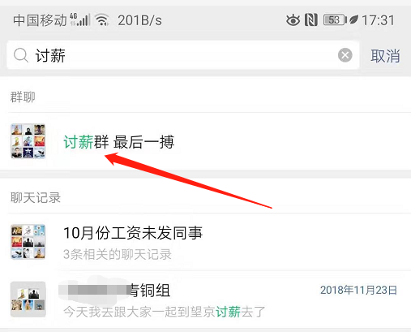
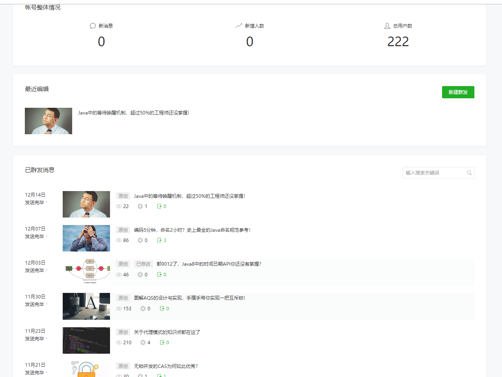
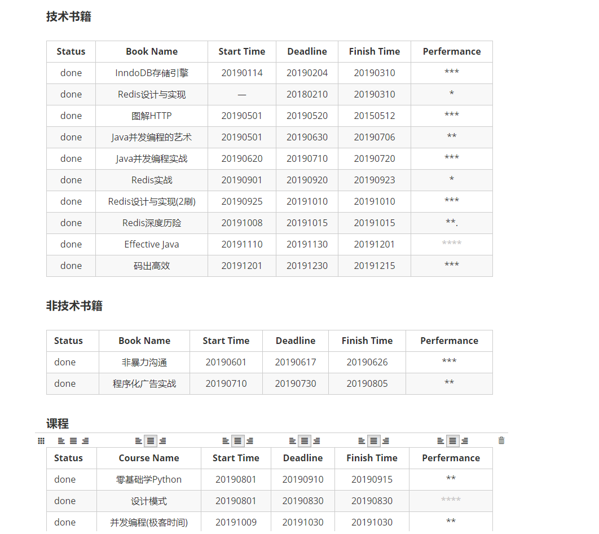
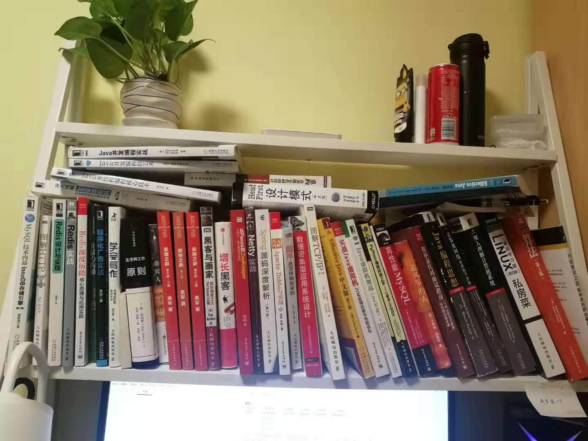
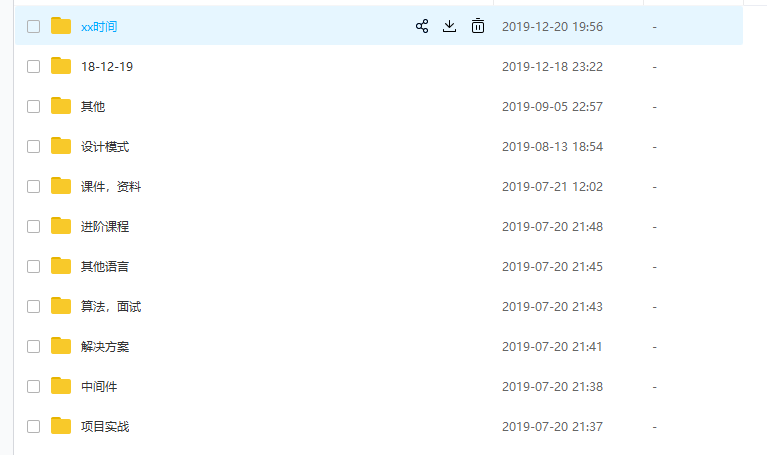
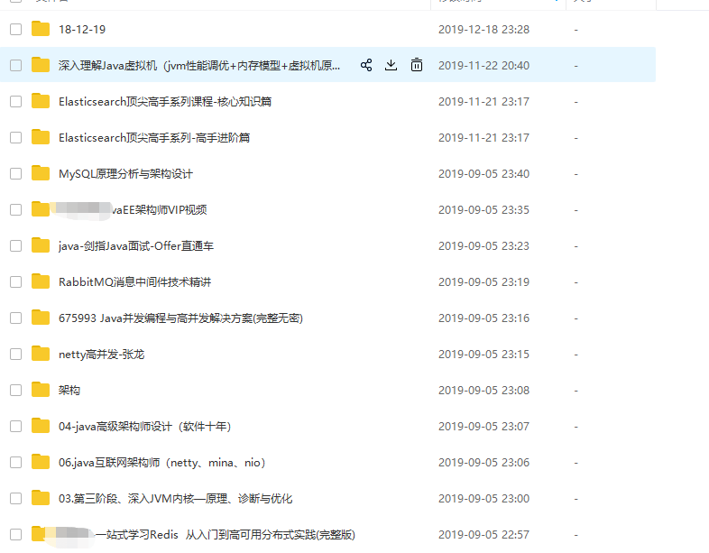

2019年可以说是对我来说是特别重要的一年。正式结束了自己的学生时代，从事了一个自己不讨厌的职业，遇到了一群优秀的人，一切都还算挺好吧。
从2018年7月份开始实习，至今已经过了18个月，这也意味着北漂已经刚好一年半。一路走来，踩过很多坑，犯过很多错误，与此同时对于我个人来说也有了很大的提升和改变。所以本次借着年终总结的机会，谈一谈从实习到现在自己关于学习，工作以及自我认知的一些体会，顺便讲一讲我的狗血实习经历。
第一次实习在一家小型创业公司，做的是互联网金融，实习四个月就倒闭了，这可能是我犯的第一个错误。大三暑假刚开始，就一个人来到了北京，身上也没有什么钱，靠着父母的救济租了一间1500块钱一个月的房子，然后开始了自己的北漂，刚开始一切都还好(从此喜欢上了做饭)。
由于没有充分的准备，所以就采用了海投的方式，由于简历看着非常一般，并且错过了找实习的最佳时间，所以但回复的并不多。大概在7月8号左右，收到了两份面试邀请，并幸运的拿到了offer，一家是做铁路系统相关的软件开发，而另一家是位于环球金融中心的互联网金融公司。
由于兜里没钱，在北京多待一天，感觉生活压力就越大，就想快速在北京安顿下来，所以没有再继续找工作，而是草草作出了选择。第一家在上地，每个月给3.5k，经常出差，并且从hr哪里了解到毕业后给的也不多，而第二家公司看起来相当高大上，实习给的薪资也差不多,转正之后各方面待遇都优于第一家，所以就选则了这家互联网金融公司。
故事从这里正式开始，工作的第二周开始接触项目，做一些简单的工作，后来进入了所谓的封闭开发(租了两套别墅，吃喝拉撒都在这里)，每天做的都是重复的工作，效率低，质量也不高，也没有什么技术氛围，个人认为大概是因为老板不懂技术以及公司的性质决定的吧，不过待遇挺好，每天吃好喝好，所以一个月重了十几斤。
2018年下半年开始，P2P接连暴雷，我们也没有幸免于难（母公司主要是做P2P）。最终在10月份，由于工资无法正常发放，许多同事陆续离职，我也在10月下旬离职了，结束了第一份实习工作。
接下来就进入了狗血的讨薪之路，当时公司已经确定是黄了，拖欠了5k多的实习工资(实习期间加了一次薪)，虽然不多，但是一分钱难倒英雄汉，更何况当时在北京生活费都是借的，就等着发工资还账，工资拖欠了一个月，当时负债已经过万了，可以说相当悲惨了。在多次讨薪(去总部找公司领导，一群人将其堵在办公司的场景大家可以脑补)无果后，看领导一副死猪不怕开水烫，一副不想发工资的样子，有同事开始搬电脑了。所以我和另一个实习生一拍即合也去搬了两台电脑，这才算是吃下了一颗定心丸，自此之后的讨薪也就不关注了，反正手中有粮薪心不慌。

经过几个月的努力，最后拖欠的工资发了，电脑也给送回去了，我也找到了另一份实习工作，也就是现在所在的公司。
第一份实习彻底打乱了我的计划，让我在北漂第一阶段变得十分狼狈，不过一切都过去了，除了狗血的经历也有了一些收获。认识了一些优秀的人，文轩，张鹏，安琪，少华，超哥，老薛...，每个人都有许多值得我去学习的地方。在此也要特别感谢职场第一个领导—海哥，在工作中对我十分照顾。
总结一下，第一份实习是一个错误的选择，选择了一个错误的时间，使我错过了秋招；选择了错误的公司，让我实习4个月后欠了上万块，并且由于公司中途变动，还搬了两次家；几个月下来每天疲于工作(不得不吐槽一下，最恶心的就是不管你晚上加班到几点，每天早上9点还要打卡)，所以，学弟学妹们在选择实习时一定要慎重考虑，选择一家靠谱, 对自己成长有利的实习工作太重要了，能解决温饱就好，薪资没拿么重要。
由于第一份实习，节奏彻乱了，幸运的是，第一家实习结束之后的第三天就找到了第二家实习，也就是现在的公司。这里也是我改变的开始，实习待遇在行业内可以说是不错了，还有各种补贴，能解决在北京的基本生活问题。扁平化的管理，弹性的工作时间，减少了在工作中一些华丽花哨的东西，总之还算符合我的预期。最让人兴奋的是刚来公司两个月就赶上了公司年会，蹭了个出国旅行，过年还给实习生带薪年假，另加1000过节费，可以说是美滋滋了。
了解了一下泰国的文化和风景。
一切的改变都是从这里开始。
作为一个职场新人，学校中的那套方法论运用到工作中可能就不那么好用了。所以，一年半以来感觉在工作中学到了很多东西，这些与技术无关。
件件有着落，事事有回音！这应该是每一个职场新人必须要知道的且必须具备的一个基本素质。对于领导的一些工作安排以及通知，要及时做出反馈，这一点很重要。
首先，这是人与人之间最基本的尊重，别人跟你的交流，应当及时做出反馈，消息是否收到，是否明确通知的意思，对于交代的工作存有疑问等。
第二，这是高效沟通的必要条件。想要高效地工作，高效率的沟通尤为重要，对于同事的论述与问题及时做出回应，表明是否收到了消息，get到对方的观点和想要表达的想法，即使当时不能解决对方的问题，也应当予以回复，减少沟通双方的信息差。
所谓Owner意识也就是主人翁意识，主要体现在两个方面，一是认真负责的态度二是积极主动的精神。
认真负责是底线。对于交付的结果负责，对于自己的代码负责，要认真对待我们的没一行代码。代码要符合团队或公司规范，统一风格，注释要清晰，保证高质量交付任务。
积极主动则是Owner的更高级的要求。对于负责的模块，要按时保证质量完成，但是也应当积极主动发现问题，暴露问题，解决问题。在开发过程中可能遇到一些遗留的问题，可能跟自己负责的模块无关，或者当前对系统的影响并不大，很多人可能会因为手头工作比较多假装看不见，选择忽略此问题，这是典型的缺乏owner意识表现，我们应当主动反馈问题，记录问题并解决问题。
有时我们不仅要完成自己负责功能模块，还需要与其他同事或者跨部门沟通。我感觉作为团队中的一员应主动承担起责任，积极主动沟通，推动合作项目的进度，保证项目顺利完成。在完成本职工作后，积极主动寻求更多的工作中去，是对自己来说是为自己寻求学习与进步的机会，对于团队来说则是一个Buff。
关于学习，真的有太多话要说了。从自学Java到现在已经三年多了，真的是走了太多的弯路，踩过太多的坑！
对于需要用到的技术首先要知道怎么用，可以根据官方文档的quick start快速入门，或者找个相关学习视频大体上过一遍，对于整个技术有个整体的认识。不过，在学习上一定要减法，这也是刚入职时我的导师重点强调的一件事情！
要抵挡住技术的诱惑，不知道大家是否有和我一样的问题。刚开始对于好多技术，比如某某框架，消息中间件，数据库等都想学习，今天学这个明天学那个，或者说是 看到别人在学什么东西，自己立马也要跟着学。这大概就是我前两年的学习策略了，到最后面试时才发现，学过再多不如精通一个，因为面试时没有人回问你哪些api怎么使用，面试官关注的更多的时技术的底层实现原理。所以，对于技术的学习，个人认为最好一次只学一个技术，保持专注。(不要同时学习多个技术)
深度优先，保持专注的同时，一定要深挖底层实现。对于要学习的技术不仅要知道是什么，怎么用，更重要的还要知道怎么实现的。比如MySQL索引，只有知道了索引的数据结构以及索引是如何设计的，才能更好的选择和使用索引，对于索引的使用做到心中有数。技术总是可以触类旁通的，当学完MySQL之后再学习MangoDB时，你会发现他们索引的底层数据结构都是使用B+Tree，学习起来就非常轻松了。
从实习刚开始，导师就要求每周要进行一次学习总结。之前一直以为写学习总结是在浪费时间，把这项要求当作是一个任务和负担，看完一本书或者学完一门技术之后从来没有进入深入总结和思考，学过的技术过不了多久很快又还了回去。
现在我把写总结当成了是一种习惯。学完一个知识点或者是定期都会进行总结，总结的内容不再是学习了什么以及做了哪些事情，而是学完了某个知识点之后与之前相比有哪些收获，对于其他技术的学习有了什么样的影响，以及当前技术有哪些缺点和优点（知道缺点和优点一样重要）。
知识输出，上个月开通了公众号cruder，准备把一些学习笔记梳理一下输出到公众号中。在写博客的过程中收获良多，对于一个知识点总要去查阅很多资料来确保它的正确性，同时还要尝试去把一个问题说清楚，需要去组织语言，绘图等，虽然花了很多时间，感觉还是值得的。

到今天为止，公众号也刚好满月了。粉丝数从0页增加到了一个魔力数字222，一共输出了6篇文章，2019年还剩一个多月，500个粉丝有没有希望还是个未知数~
不知是否和我一样，感觉工作占用了大量的时间和精力，没有时间去学习。不过时间就像rugou，挤剂总会有的！利用好8小时之外的时间，我们可以做很多事情；比如，每天上下班地铁上时间读书，每个月至少能看一本技术书籍！

今年总共读了10多本技术书籍吧，基本上大多数书籍读了都不止一遍，有一部分没有列到读书记录中，而这些至少有一半是在地铁上看的。
近一年来，从来没有12点之前睡觉。已经样成了习惯，每天坚持学习到一点钟（偶尔加钟），七点钟起床(取决于几点睡)。当然这个要根据自己来决定了，毕竟有些人早睡早期效率高，而有的人则是熬夜学习效率更高，不过不管怎样，多花点时间学习是绝对没有错的。
多读书，这很重要！古人云，书中自有颜如玉，书中自由黄金屋！真的太对了！非常可怕的是，前两年学习过程中，没有认真读过一本书！就是传说中啥都会，啥都不会。对于学过的技术都知道怎么使用，对于实现原理也略知一二，不过稍微深入或者扩展一点基本上就gg了。这也是自学时最坑爹的事情了，根本真不知道该学什么，该怎么学，总感觉能实现功能就够了...
对于学习视频以及其他课程是快餐，能解决问题但不是长久之计！网上各大培训机构的免费视频，或者<极客时间>里的付费课程，相信大家都能找到适合自己的。这些课程通常都是视频或者音频，适合人类阅读，也更容易被接受和吸收，所以非常教学视频适合快速入门一门技术。不过对技术的深入学习，还需要通过书籍和官方文档等权威的资料。所以，对于技术的学习我感觉通常可以通过教学视频或者官方quick start入门， 然后再阅读书籍深入理解， 最后结合源码深入学习，印证自己的猜想和认知。
对于学习资料的获取，可以说路子非常广了。没毕业时比较穷，喜欢去找一些盗版的教学视频，各大培训班免费的视频。当然现在依旧很穷，不过偶尔会花些钱支持一下正版。当然一切都是我自己摸爬滚打探索出来的，因为刚开始学习时没有人教过我，走了不少弯路，所以希望初学的小伙伴能认真读完。
选对书籍，每一本技术书籍都需要花费很多时间才能阅读完，所以选对书很重要。通常可以请教一些靠谱的前辈，毕竟好多坑他们可能替我们踩过了；其次就是到豆瓣上搜一下，看一下评分和评价，通常情况下8.0以上的技术书籍都是值得阅读的；如果是新出的书籍，可以看一下作者的来历，如果作者是一线大厂的技术专家，或者业界大佬，那买这本书准没错了。以下是我买的书，个人感觉对于Java工程师来说，这些的技术书籍都值得一读。

现在网上的资料非常丰富，不仅数量多，质量也慢慢变高了，所以找一份学习资料并不难。由于版权等问题，有些视频资料获取可能会有一些小小的困难。通常我们可以在一些培训机构官网找到一些入门的课程，如传智播客，尚硅谷等，我当时入门java就是看的风清扬的java基础课程；其次当然是万能的B站，有很多热心的up主会上传一些不错的课程；最后则是付费课程了，如慕课网，极客时间（强烈推荐）的课程质量都还可以也不贵，至于腾讯可能，xx学院等一些什么架构师，年薪百万的课程就不推荐了（看过盗版，大多数都是收智商税的）。当然，如果没钱买正版，网上也有一些绿色资源，可以自行探索一下，或者在我公众号里留言，我帮你找找，网盘里已经存了一千多G视频了...


当然，还有一些技术社区也有很多干货。如博客园，简书，掘金，以及大佬们的公众号，如 架构师之路， Hollis等，也可以关注我的渣渣公众号Cruder。
2019年经历了很多事情，来回搬家，毕业，实习转正等。如果给自己的打个分的话，也就勉强及格7分吧，主要在于上半年没有进入状态。过去的都已经过去了，希望2020年能遇见更好的自己。
2020年期望自己在技术上能有所进步，打牢基础知识的同时，深入研究1门技术，至于是消息中间件，还是数据库技术目前还没有确定，总之至少要学好一门。
每个月至少两篇技术博客，这个比较保守，正常应该每周写一篇吧。对于学过的知识深入研究和总结，分享给别人的同时也锻炼一下自己的写作能力。
读10本技术书籍，读书真的很重要，这个flag必须要实现！同时希望公众号粉丝能够增长到四位数，让更多的人一起见证我的成长，一起进步。最后，希望能认识更多志同道合的朋友，能够一起成长的小伙伴可以关注一下。